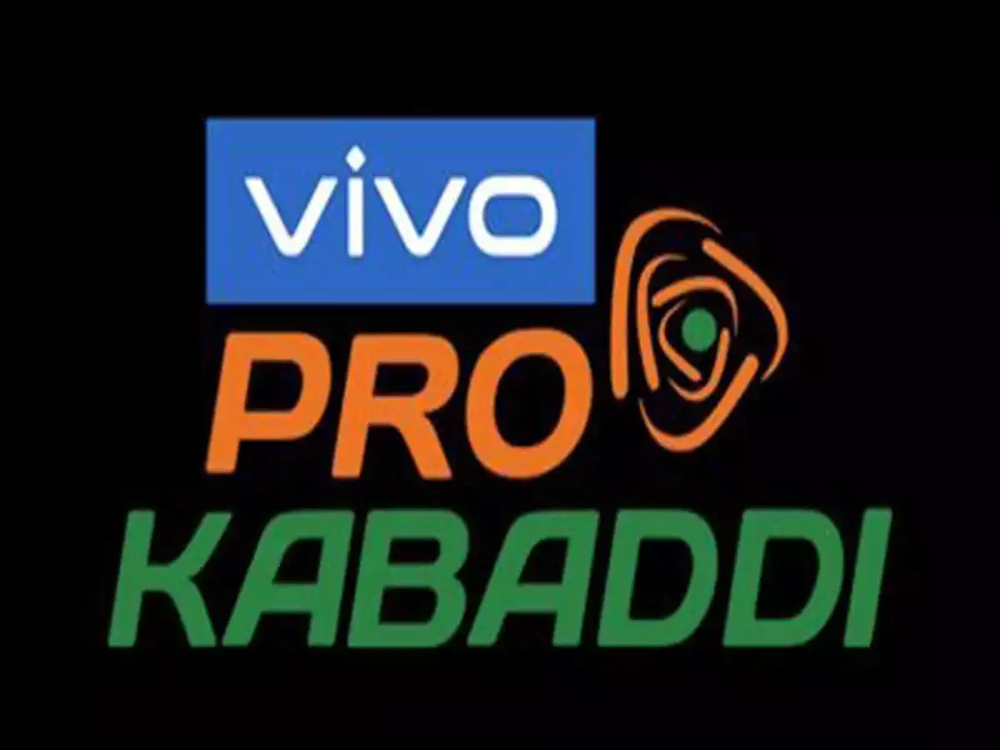

Star Sports 1 Hindi
ESPN+ (US)
Pro Kabaddi League (known as Vivo Pro Kabbadi for sponsorship reasons) or abbreviated to PKL is a men's professional Kabaddi league of India. It was launched in 2014 and is broadcast on Star Sports. However, Season 8 was postponed due to the COVID-19 pandemic and the season was scheduled to commence on 22 December 2021. The league's inception was influenced by the popularity of the Kabaddi tournament at the 2006 Asian Games. The format of the competition was influenced by the Indian Premier League. The Pro Kabaddi League uses a franchise-based model and its first season was held in 2014 with eight teams each of which has paid fees of up to US$250,000 to join. There were doubts over whether the Pro Kabaddi League would be successful, noting that many leagues were attempting to emulate the IPL's business model and success and that, unlike cricket, there were relatively fewer well-known players in Kabaddi. However, it was also noted that kabaddi was widely played in grassroots community settings, and could thus attract a wide variety of rural and metropolitan viewers for advertisers to target if the league gained significant attraction. The inaugural season was seen by 43.5 crores (435 million) viewers, second to the 2014 Indian Premier League's 55.2 crores (552 million), while the first season final between Jaipur Pink Panthers and U-Mumba was watched by 8.64 crores (86.4 million). Star Sports, the Pro Kabaddi League's broadcaster, subsequently announced in 2015 that it would acquire a 74% stake in the league's parent company Mashal Sports. For the 2017 and 2018–19 season, the Pro Kabaddi League added four new teams, and changed its format to split the teams into two divisions known as "zones". Soon the league returned to its regular double round-robin format from the 2019 season.
| Tournament Name | Pro Kabaddi Leauge |
|---|---|
| Tournament Logo |  |
| Country | India |
| First Tournament | 2014 |
| Tournament Format | Double Round-Robin League & Playoffs |
| No. of teams | 12 |
| Current Champion | Dabang Delhi KC (1st Title) |
| Most Successful Team | Patna Pirates (3 Titles) |
| Most Raid Points in PKL History | Pardeep Narwal (1348 Points) |
| Most Tackle Points in PKL History | Manjeet Chillar (391 Points) |
| TV Partner | Star Sports 2 Star Sports 1 Hindi ESPN+ (US) |
| Slogan | Le Panga |
| Official Website | Pro Kabaddi League |
| Tournament Stats | Tournament Indivudual Statistics |
The Pro Kabaddi League's rules are similar to that of the indoor team version of Kabaddi, but with additional rules to encourage more scoring. Kabaddi is a contact team sport, played between two teams of seven players.
The objective of the game is for a single player on offence, referred to as a "raider", to run into the opposing team's half of a court, touch out as many of their defenders as possible, and return to their own half of the court, all without being tackled by the defenders, and in a single breath. Points are scored for each player tagged by the raider, while the opposing team earns a point for stopping the raider. Players are taken out of the game if they are touched or tackled, but are brought back in for each point scored by their team from a tags or tackle.
Playing two "empty" raids in a row will trigger a "Do or Die", where the raider must score a point or they will be declared out.
When a defensive side has three or fewer players remaining, tackles scored are termed as "Super Tackle", which is worth two points instead of one.